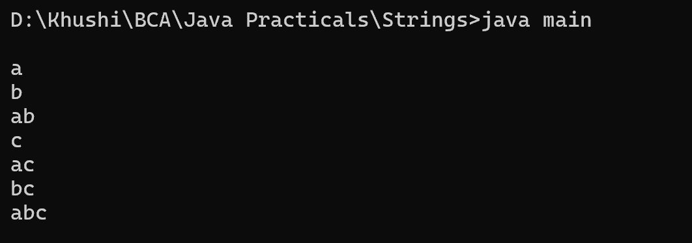

20. Program to find all subsets of a string
class main {
public static void main(String[] args) {
String str = "abc";
int n = str.length();
for (int i = 0; i < (1 << n); i++) {
StringBuilder subset = new StringBuilder();
for (int j = 0; j < n; j++) {
if ((i & (1 << j)) > 0) {
subset.append(str.charAt(j));
}
}
System.out.println(subset);
}
}
}
